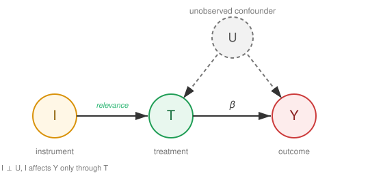

Instrumental Variables#
Identification and estimation under unmeasured confounding via an instrument.
The methods in Direct Adjustment and Heterogeneous Treatment Effects assume unconfoundedness - that all common causes of treatment and outcome are measured. When that fails, an instrument can still identify a causal effect by exploiting a source of exogenous variation in the treatment. This chapter develops the instrumental-variable estimand, its two-stage least-squares implementation, and the genetic special case of Mendelian randomization.
Instrumental Variable Approach#
{kind=link}

Fig. 15 Instrumental variable \(I\). The instrument induces exogenous variation in the treatment \(T\) while being independent of the unobserved confounder \(U\) and affecting the outcome \(Y\) only through \(T\).#
When unobserved confounding exists (see Fig. 15), an instrument \(I\) can identify the causal effect if (Shalizi, 2025, Ch. 23):
Relevance: \(I\) affects \(T\)
Exogenous noise: \(I \perp\!\!\!\perp U\) - the instrumental variable is independent of the unobserved confounder
Exclusion restriction: \(I\) affects \(Y\) only through \(T\)
The modern econometric interpretation of instrumental variables traces to Imbens & Angrist (1994), who show that 2SLS identifies a local average treatment effect for compliers, and to the potential-outcomes framework of Angrist, Imbens & Rubin (1996); Angrist & Krueger (1991) is the canonical applied example, using quarter of birth as an instrument for schooling.
The instrumental variable \(I\) is a source of exogenous variation in \(T\) that is uncorrelated with the common ancestors of \(T\) and \(Y\). By seeing how both \(T\) and \(Y\) respond to these perturbations, and using the fact that \(I\) only influences \(Y\) through \(T\), we can deduce the causal effect of \(T\) on \(Y\).
Two Stage Least Squares Regression#
Algorithm 14 (Two Stage Least Squares (2SLS))
Inputs Observed instrument \(I\), treatment variable \(T\), outcome \(Y\), exogenous covariates \(X\)
Outputs Estimated causal effect \(\hat{\beta}\) of \(T\) on \(Y\)
Stage 1: Regress \(T\) on instrument \(I\) and covariates \(X\) (Isolate exogenous variation)
Estimate \(\hat{\alpha}, \hat{\gamma}\) from \(T = \alpha I + \gamma X + \varepsilon_1\)
Compute predicted values \(\hat{T} = \hat{\alpha} I + \hat{\gamma} X\) (\(\hat{T}\) is now independent of \(U\))
Stage 2: Regress \(Y\) on predicted \(\hat{T}\) and covariates \(X\) (Identify causal mechanism)
Estimate \(\hat{\beta}, \hat{\delta}\) from \(Y = \beta \hat{T} + \delta X + \varepsilon_2\)
Return estimated causal effect \(\hat{\beta}\)
Important
The same exogenous covariates \(X\) must appear in both stages. Omitting them produces a biased estimate whenever \(X\) is correlated with both the instrument \(I\) and the outcome \(Y\): the covariates must be partialled out of the instrument–treatment relationship for the exclusion restriction and exogeneity conditions to hold conditionally. The bivariate form (\(T = \alpha I + \varepsilon_1\), \(Y = \beta \hat{T} + \varepsilon_2\)) is valid only under the strong assumption that no observed covariate affects \(Y\) - a condition almost never satisfied in insurance data.
Tip
For valid inference, obtain 2SLS estimates from a dedicated IV routine (linearmodels.IV2SLS in Python, AER::ivreg in R, or ivregress in Stata) rather than by fitting the two OLS stages by hand. The two approaches agree on the point estimate \(\hat{\beta}\), but only the IV routine returns correct standard errors. The reason is instructive: valid 2SLS inference computes the error variance from the structural residuals \(u = Y - \hat{\beta}T\) using the observed treatment \(T\), whereas a manual second-stage OLS would use the fitted-treatment residuals \(\hat{\varepsilon} = Y - \hat{\beta}\hat{T}\). Since \(\hat{\varepsilon} = u + \hat{\beta}(T - \hat{T})\), we have \(\mathbb{E}[\hat{\varepsilon}^2] = \mathbb{E}[u^2] + \beta^2\,\operatorname{Var}(T - \hat{T}) > \mathbb{E}[u^2]\), so hand-rolled standard errors come out too large - widening confidence intervals and shrinking \(t\)-statistics. Using the dedicated routine keeps inference well-calibrated, which matters in actuarial screening where an over-conservative test can let a genuinely beneficial intervention slip below the significance threshold (Wooldridge, 2010, Econometric Analysis of Cross Section and Panel Data, p. 96).
Mendelian Randomization#
Mendelian Randomization (MR) is an application of the instrumental variable principle to genetics and epidemiology. The idea - dating to Katan (1986) and formalized by Davey Smith & Ebrahim (2003) - exploits the fact that genetic variants are assigned at conception, before any environmental exposure, and therefore satisfy the IV conditions almost by construction:
Relevance: the variant is associated with the exposure \(T\) (e.g. LDL cholesterol level).
Exogeneity: Mendelian randomization - the random shuffling of alleles during meiosis - makes the inherited variant independent of most confounders \(U\).
Exclusion restriction: the variant affects the outcome \(Y\) only through the exposure \(T\), not through any alternative biological pathway (no pleiotropy).
When these conditions hold, the genetic variant \(G\) (typically a single-nucleotide polymorphism, SNP) serves as an instrument and 2SLS identifies the causal effect of the exposure on the outcome:
which is the Wald ratio estimator - the simplest MR estimate when a single instrument is used. With multiple SNPs the ratio generalises to a 2SLS (or likelihood-based) estimator, and the overidentification can be exploited to test for and correct pleiotropy (Bowden, Davey Smith & Burgess, 2015).
MR in Actuarial and Health Insurance Contexts
MR estimates are increasingly available in the public health literature for risk factors relevant to life and health insurers - BMI, blood pressure, lipid levels, smoking behaviour, and many biomarkers. Because a well-conducted MR study targets the lifetime causal effect of a modifiable risk factor (rather than an association observed at a single medical exam), the estimates can inform pricing and underwriting in ways that observational risk scores cannot: they are, in principle, robust to reverse causation and the confounding that plagues claims-linked data. The key caveat is the exclusion restriction: many SNPs have pleiotropic effects, so MR estimates should be accompanied by sensitivity analyses such as MR-Egger regression (Bowden et al., 2015) or weighted median estimators.